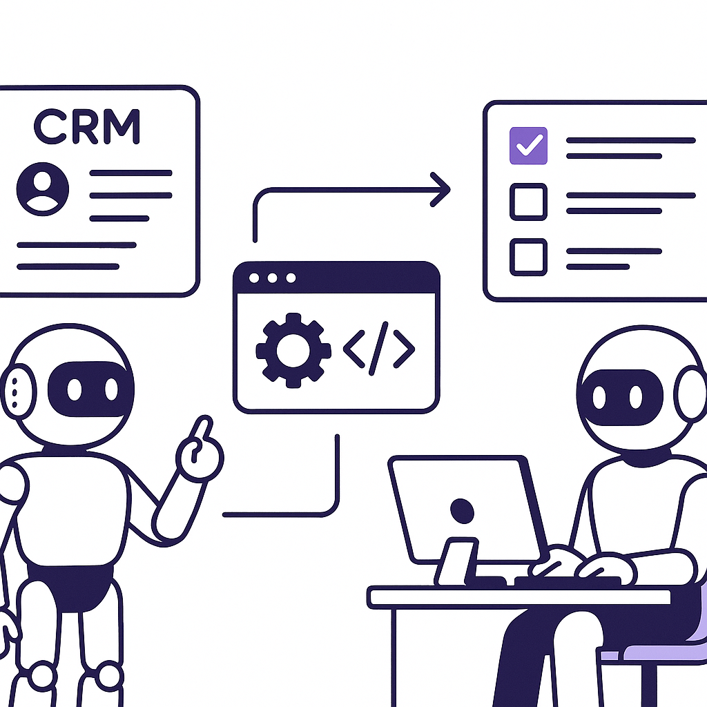
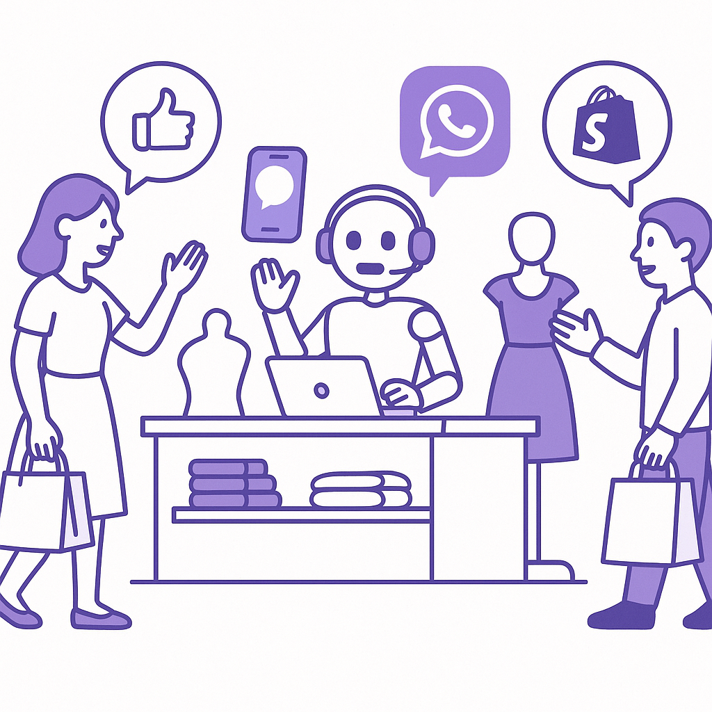
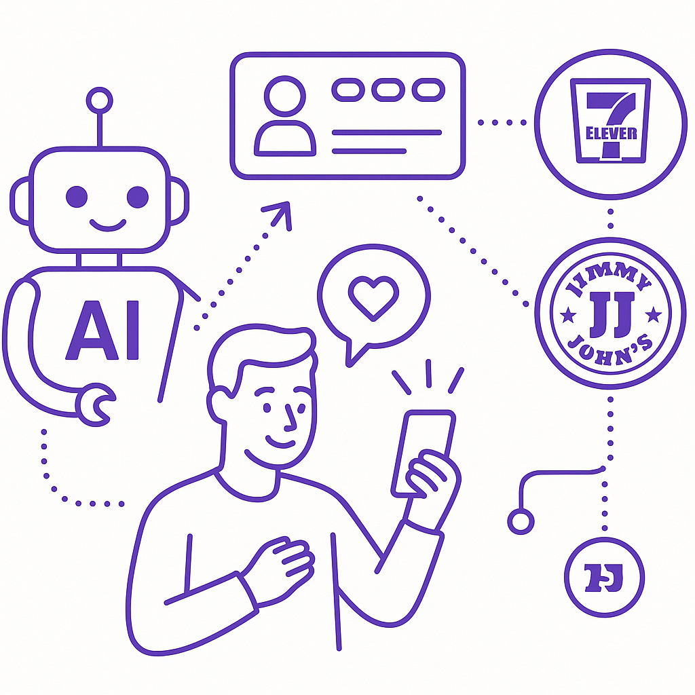

Publishing Recommendation
reviseSeveral posts contain exaggerated claims and repetitive language that need to be toned down to align with our brand voice. Additionally, some posts lack the necessary depth and specificity, making them sound overly generic or AI-generated.
Today's drafts highlight important AI developments and their implications for business. However, the language needs refinement to avoid exaggerated claims and ensure clarity. Posts should focus more on providing actionable insights and specific examples to demonstrate Purands AI's unique capabilities, aligning with our practical and insightful brand voice.
LinkedIn Posts (10)
1. OpenAI launches GPT-5.6 with programmatic tool calling ★ Purands solution · high priority
CTA: How would you integrate this into your retention strategy?

⬇ Download image{kind=link}
Image prompt · isometric-flat
Caption: GPT-5.6 integrates programmatic tool calling for enhanced AI agents.
Alternative hooks
- Programmatic tool calling in GPT-5.6 is a game-changer for retention marketing.
- How GPT-5.6 elevates AI-driven customer engagement: a closer look.
- GPT-5.6 offers new possibilities for AI-enhanced retention strategies.
Research behind this post (sources, summaries & confidence)
OpenAI launches GPT-5.6 with programmatic tool calling conf 0.85 · AI in business
The release of GPT-5.6 with new capabilities is significant for businesses leveraging AI for customer data processing and enhancement of retention marketing strategies.
Sources & what I took from each
- OpenAI launches GPT-5.6 with new capabilities.: The MarkTechPost article describes GPT-5.6's release, emphasizing its programmatic tool calling and scalable tiered model options. ↗ read source
Original trend links
Risks / caveats
- Potential for misuse of advanced AI capabilities in sensitive applications.
- Dependence on proprietary AI tools may limit flexibility.
2. Product management for AI features in enterprise ★ Purands solution · high priority
CTA: How do you ensure your AI delivers real value in your enterprise?
Caption: Enterprises often underestimate AI model failure rates by 2.25x.
Alternative hooks
- Enterprises are underestimating AI model failure rates by 2.25x.
- AI models fail more often than enterprises think.
- What happens when your AI fails 2.25x more than expected?
Research behind this post (sources, summaries & confidence)
Product management for AI features in enterprise conf 0.80 · Product management
This discussion focuses on the intricacies of managing AI product features, critical for ensuring that AI solutions deliver tangible value in enterprise settings.
Sources & what I took from each
- Enterprises underestimate AI model failure rates.: VentureBeat highlights how enterprises often lack accurate assessments of AI model failure rates, impacting product management strategies. ↗ read source
Original trend links
Risks / caveats
- Misestimating failure rates can lead to inadequate risk management and resource allocation.
- Potential for significant operational disruptions if AI failures are not properly accounted for.
3. Retail AI deployment scales personalization and customer insights ★ Purands solution · high priority
CTA: How are you integrating AI to enhance customer personalization in your business?

⬇ Download image{kind=link}
Image prompt · isometric-flat
Caption: AI agents enhance customer engagement in retail.
Alternative hooks
- Retailers are ditching static interaction patterns for AI-driven personalization.
- AI is transforming customer engagement by replacing static patterns with dynamic strategies.
- Retail AI is not just a trend; it's reshaping how we understand and engage with customers.
Research behind this post (sources, summaries & confidence)
Retail AI deployment scales personalization and customer insights conf 0.75 · Customer engagement and lifecycle messaging
The discussion on deploying retail AI to improve customer personalization is highly relevant for retention marketing, emphasizing the role of AI in enhancing customer insights and engagement.
Sources & what I took from each
- Retail AI enhances personalization and customer insights.: The source outlines how AI is used in retail to replace static customer interaction patterns with dynamic, data-driven personalization strategies. ↗ read source
Original trend links
Risks / caveats
- Implementation costs and data privacy concerns could hinder adoption.
- Over-reliance on AI could lead to a lack of human oversight in customer interactions.
4. Listen Labs raises $69M to scale AI customer interviews ★ Purands solution · high priority
CTA: How do you see AI reshaping customer engagement in your industry?
Alternative hooks
- Listen Labs just bagged $69M to enhance AI customer interviews.
- AI is reshaping how we understand customers - here's how.
- Customer insights are evolving, but action is what matters.
Research behind this post (sources, summaries & confidence)
Listen Labs raises $69M to scale AI customer interviews conf 0.75 · AI startups
The funding round for Listen Labs underscores the growing investment in AI solutions aimed at enhancing customer understanding and engagement, crucial for retention marketing.
Sources & what I took from each
- Listen Labs raises $69M for AI customer interviews.: VentureBeat article confirms the funding round aimed at scaling AI-driven customer interview capabilities. ↗ read source
Original trend links
Risks / caveats
- The success of AI-driven interviews depends on their ability to generate actionable insights.
- Privacy concerns around customer data usage in interviews.
5. Slack's Slackbot integrates CRM data for enhanced workflows ★ Purands solution · high priority
CTA: How are you integrating CRM data into your marketing workflows? Share your approach.
Alternative hooks
- Slackbot is pulling CRM data, but what if you could do more with it?
- Imagine generating charts from a chat message. Now, imagine optimizing your marketing with CRM data.
- Slackbot's CRM integration is impressive. But how about using that data to drive retention?
Research behind this post (sources, summaries & confidence)
Slack's Slackbot integrates CRM data for enhanced workflows conf 0.70 · CRM strategy and lifecycle messaging
This development highlights the increasing integration of CRM data into conversational interfaces, enhancing workflow efficiency and showcasing concrete AI applications in business.
Sources & what I took from each
- Slackbot integrates CRM data for enhanced workflows.: VentureBeat article details new Slackbot functionalities allowing integration with CRM systems to automate tasks like generating charts and sending documents. ↗ read source
Original trend links
Risks / caveats
- Integration complexities could lead to data inaccuracies or workflow disruptions.
- Privacy concerns regarding CRM data access and handling need to be addressed.
6. Home Depot adds new partners to pro loyalty program ★ Purands solution · high priority
CTA: What integration challenges have you faced with loyalty programs?

⬇ Download image{kind=link}
Image prompt · isometric-flat
Caption: AI enhances loyalty program partnerships with personalization.
Alternative hooks
- Home Depot's latest loyalty boost: 7-Eleven and Jimmy John's.
- Loyalty programs are evolving, and partnerships are key.
- How do you make loyalty programs work better? Add the right partners.
Research behind this post (sources, summaries & confidence)
Home Depot adds new partners to pro loyalty program conf 0.60 · Loyalty programs
The expansion of Home Depot's pro loyalty program with new partners highlights trends in loyalty strategy and partner integration, impacting customer retention approaches.
Sources & what I took from each
- Home Depot expands pro loyalty program with new partners.: Retail Dive article details the inclusion of new partners like 7-Eleven and Jimmy John's in Home Depot's loyalty program. ↗ read source
Original trend links
Risks / caveats
- The effectiveness of new partnerships in enhancing customer loyalty is uncertain.
- Potential challenges in seamlessly integrating new partners into existing loyalty programs.
7. WhatsApp-first commerce platform for South African retailers ★ Purands solution · high priority
CTA: How are you leveraging messaging platforms to enhance customer engagement?
Alternative hooks
- In South Africa, a WhatsApp-first commerce platform is making waves.
- WhatsApp-first commerce is more than a trend; it's a necessity in mobile-first regions.
- APAC's mobile-first dynamics find a parallel in South Africa's WhatsApp commerce focus.
Research behind this post (sources, summaries & confidence)
WhatsApp-first commerce platform for South African retailers conf 0.50 · WhatsApp commerce
The focus on WhatsApp-first commerce infrastructure aligns with the APAC region's mobile-first and messaging-first dynamics, offering insights into evolving consumer engagement strategies.
Sources & what I took from each
- WhatsApp-first commerce platform targets South African retailers.: The GitHub page outlines the platform’s objectives to serve clothing wholesalers and retailers through WhatsApp-first commerce solutions. ↗ read source
Original trend links
Risks / caveats
- Limited regional applicability as the focus is on South Africa, which may not directly align with APAC dynamics.
- The platform's effectiveness in achieving its goals is yet to be proven.
8. Shared API keys expose AI agents at enterprises
CTA: What security measures have you found effective in protecting API keys?
Caption: Shared API keys create vulnerabilities in enterprise AI systems.
Alternative hooks
- In security, one weak link can break the chain.
- Shared API keys: a small detail with big consequences.
- Data breaches often start with a key left under the mat.
Research behind this post (sources, summaries & confidence)
Shared API keys expose AI agents at enterprises conf 0.90 · AI in business
Security concerns around shared API keys in AI systems highlight challenges in AI deployment and the need for secure practices, critical for maintaining trust in AI-driven retention marketing solutions.
Sources & what I took from each
- Shared API keys pose security risks in AI systems.: VentureBeat research discusses the vulnerabilities introduced by shared API keys, emphasizing the need for improved security measures. ↗ read source
Original trend links
Risks / caveats
- Enterprise systems may suffer from data breaches due to unsecured API keys.
- Potential legal and compliance issues if sensitive data is exposed.
9. AI agent startup uses its own agent to raise a $100M fund
CTA: How do you see AI changing the way we handle business operations? Share your thoughts.
Alternative hooks
- Lyzr just let an AI agent handle a $100M fundraise. Here's what happened.
- What if you let AI run your next big business move?
- An AI agent managing $100M? Lyzr just did it.
Research behind this post (sources, summaries & confidence)
AI agent startup uses its own agent to raise a $100M fund conf 0.80 · AI startups
The successful use of an AI agent to manage a $100M fundraising round showcases the practicality and potential of AI in business operations, directly aligning with real, measurable AI applications that Purands AI advocates.
Sources & what I took from each
- AI agent managed $100M fundraising round.: The article from TechCrunch confirms that Lyzr used its AI agent to manage the fundraising process, highlighting the agent's capabilities in this scenario. ↗ read source
Original trend links
Risks / caveats
- Reliance on AI for complex financial transactions may introduce unforeseen risks or errors.
- The success in fundraising may be influenced by factors beyond the AI agent's capabilities, such as market conditions or existing investor relationships.
10. Meta's Muse Spark 1.1 enters AI coding battle
CTA: Have you tried automating code migrations? What challenges did you face?
Alternative hooks
- Meta's latest move: Muse Spark 1.1 tackles AI coding.
- Can Meta's Muse Spark 1.1 outshine its rivals in AI coding?
- Automating code migrations: Meta's Muse Spark 1.1 enters the scene.
Research behind this post (sources, summaries & confidence)
Meta's Muse Spark 1.1 enters AI coding battle conf 0.80 · AI in business
Meta's entry into AI coding tools with Muse Spark 1.1 reflects the competitive landscape in AI-driven productivity tools, influencing how businesses might adopt AI for operational efficiencies.
Sources & what I took from each
- Meta launches Muse Spark 1.1 for AI coding.: The TechCrunch article reports on Meta's new AI coding tool, Muse Spark 1.1, and its capabilities for handling code migrations and bug fixes. ↗ read source
Original trend links
Risks / caveats
- The competitive market may limit Muse Spark’s adoption if it doesn’t outperform existing solutions.
- Potential for errors in automated code migrations.
Today's Trends
| # | Trend | Category | Why it matters |
|---|---|---|---|
| 1 | AI agent startup uses its own agent to raise a $100M fund
source |
AI startups | The successful use of an AI agent to manage a $100M fundraising round showcases the practicality and potential of AI in business operations, directly aligning with real, measurable AI applications that Purands AI advocates. |
| 2 | Slack's Slackbot integrates CRM data for enhanced workflows
source |
CRM strategy and lifecycle messaging | This development highlights the increasing integration of CRM data into conversational interfaces, enhancing workflow efficiency and showcasing concrete AI applications in business. |
| 3 | Retail AI deployment scales personalization and customer insights
source |
Customer engagement and lifecycle messaging | The discussion on deploying retail AI to improve customer personalization is highly relevant for retention marketing, emphasizing the role of AI in enhancing customer insights and engagement. |
| 4 | OpenAI launches GPT-5.6 with programmatic tool calling
source |
AI in business | The release of GPT-5.6 with new capabilities is significant for businesses leveraging AI for customer data processing and enhancement of retention marketing strategies. |
| 5 | WhatsApp-first commerce platform for South African retailers
source |
WhatsApp commerce | The focus on WhatsApp-first commerce infrastructure aligns with the APAC region's mobile-first and messaging-first dynamics, offering insights into evolving consumer engagement strategies. |
| 6 | Shared API keys expose AI agents at enterprises
source |
AI in business | Security concerns around shared API keys in AI systems highlight challenges in AI deployment and the need for secure practices, critical for maintaining trust in AI-driven retention marketing solutions. |
| 7 | Meta's Muse Spark 1.1 enters AI coding battle
source |
AI in business | Meta's entry into AI coding tools with Muse Spark 1.1 reflects the competitive landscape in AI-driven productivity tools, influencing how businesses might adopt AI for operational efficiencies. |
| 8 | Listen Labs raises $69M to scale AI customer interviews
source |
AI startups | The funding round for Listen Labs underscores the growing investment in AI solutions aimed at enhancing customer understanding and engagement, crucial for retention marketing. |
| 9 | Railway challenges AWS with AI-native cloud infrastructure
source |
AI startups | Railway's challenge to AWS with AI-native solutions highlights a shift towards specialized cloud services that can support AI-driven retention marketing platforms. |
| 10 | Home Depot adds new partners to pro loyalty program
source |
Loyalty programs | The expansion of Home Depot's pro loyalty program with new partners highlights trends in loyalty strategy and partner integration, impacting customer retention approaches. |
| 11 | L’Oreal uses AI for faster product development
source |
AI in business | L’Oreal's application of AI to accelerate product development processes illustrates practical AI integration in business, relevant to improving time-to-market in competitive industries. |
| 12 | Anthropic releases Claude Desktop agent 'Cowork'
source |
AI in business | Anthropic's Claude Desktop agent reflects advancements in AI tools that facilitate document processing and workflow automation, relevant for business efficiency and retention efforts. |
| 13 | Product management for AI features in enterprise
source |
Product management | This discussion focuses on the intricacies of managing AI product features, critical for ensuring that AI solutions deliver tangible value in enterprise settings. |
| 14 | Microsoft integrates AI in Patch Tuesday updates
source |
AI in business | The integration of AI in Microsoft's update process signifies AI's role in enhancing cybersecurity and operational stability, impacting enterprise IT management strategies. |
Risk Assessment
- Exaggerated claims such as 'game-changer' in the GPT-5.6 post may mislead readers.
- Repetitive mentions of Purands AI's capabilities without fresh insights could be perceived as promotional rather than informative.
- Some posts could be interpreted as AI-generated due to their formulaic structure and lack of specific examples.
Suggested LinkedIn Comments (30)
Open each post, then paste the copied comment. Nothing is posted automatically.
1. respectful challenge · Purna Addala — Ready for Your Next Career Move in the U.S. Tech Industry? We are currently hel
Post by: Purna Addala
Why it works: It acknowledges the opportunity while urging deeper value beyond just visa eligibility, adding depth to the discussion.
↗ Open LinkedIn post to paste comment2. insight · InnovatetoImpact — The tech industry is not slowing down and it is not waiting for you to feel read
Post by: InnovatetoImpact
Why it works: It pushes the conversation from just acquiring skills to acquiring the right skills, offering a practical angle.
↗ Open LinkedIn post to paste comment3. expansion · Andreessen Horowitz — Every industry has its own language. Tech is no different. Here are 4 key terms
Post by: Andreessen Horowitz
Why it works: It expands the post's idea by emphasizing application over mere understanding, offering a practical perspective.
↗ Open LinkedIn post to paste comment4. opinion · G&T (girls and tech!) — It was SO rewarding for us to change these girls' perspective on what careers in
Post by: G&T (girls and tech!)
Why it works: It adds a broader societal perspective, highlighting the long-term impact of such initiatives.
↗ Open LinkedIn post to paste comment5. insight · Valoria Gibbs — Technology projects shouldn't begin with features. They should begin with outcom
Post by: Valoria Gibbs
Why it works: It reinforces the post's point by offering a concrete benefit of outcome-focused projects.
↗ Open LinkedIn post to paste comment6. insight · Saheed Abiodun Balogun — Good morning, Builders! In technology, staying comfortable is often the fastest
Post by: Saheed Abiodun Balogun
Why it works: It aligns with the post's theme while emphasizing the necessity of discomfort for progress.
↗ Open LinkedIn post to paste comment7. opinion · Ejike Ezeani,FCA — Technology does not transform businesses. People using technology do. Tools are
Post by: Ejike Ezeani,FCA
Why it works: It emphasizes the importance of human capital, aligning with and amplifying the post's message.
↗ Open LinkedIn post to paste comment8. respectful challenge · David Biser — I had a great in person interview for a custodial position today. The interview
Post by: David Biser
Why it works: It challenges the status quo of hiring practices by pointing out the value of versatile skills.
↗ Open LinkedIn post to paste comment9. insight · Jitesh M. — The goal isn’t a successful migration. The goal is uninterrupted business operat
Post by: Jitesh M.
Why it works: It aligns with the post's theme while adding a layer of specificity about what effective technology implementation looks like.
↗ Open LinkedIn post to paste comment10. opinion · Coco Brown — Toni Townes-Whitley brings the kind of perspective you can only earn after 35 ye
Post by: Coco Brown
Why it works: It reaffirms the post's praise by highlighting the necessity of accountability, adding a layer of urgency and relevance.
↗ Open LinkedIn post to paste comment11. insight · Purna Addala — Ready for Your Next Career Move in the U.S. Tech Industry? We are currently hel
Post by: Purna Addala
Why it works: The comment highlights the strategic advantage of targeting local candidates, adding depth to the post's focus on specific visa categories.
↗ Open LinkedIn post to paste comment12. expansion · Igor Schagaev — had recently a sceptical discussion with new generation of technologists about k
Post by: Igor Schagaev
Why it works: This expands on the post's theme by emphasizing practical application, providing a more nuanced view of technology's role.
↗ Open LinkedIn post to paste comment13. insight · Brian Gannuscio — https://lnkd.in/eNd9v3s2 Coastal is seeking a leader to drive strategy on Artifi
Post by: Brian Gannuscio
Why it works: The comment adds value by focusing on the strategic challenge, complementing the post's call for leadership.
↗ Open LinkedIn post to paste comment14. insight · Power Supply — Artificial intelligence has officially graduated from a conference-stage buzzwor
Post by: Power Supply
Why it works: The comment distinguishes between AI's potential roles, offering a practical perspective on investment decisions.
↗ Open LinkedIn post to paste comment15. respectful challenge · meteoriQs Technologies Private Limited — AI Agents & Autonomous Workflows are intelligent AI systems that autonomously pl
Post by: meteoriQs Technologies Private Limited
Why it works: The comment raises a critical point about adaptability, encouraging a deeper consideration of AI systems' robustness.
↗ Open LinkedIn post to paste comment16. insight · Andriy Burkov — This week's edition of my AI newsletter has just been dispatched to subscribers.
Post by: Andriy Burkov
Why it works: The comment underscores the importance of staying updated, aligning with the newsletter's purpose.
↗ Open LinkedIn post to paste comment17. opinion · Alex Buscemi — Trump says AI is "woke" — is it? A Washington Post study confirmed that artific
Post by: Alex Buscemi
Why it works: This directly addresses the controversy, suggesting a constructive path forward, which adds depth to the discussion.
↗ Open LinkedIn post to paste comment18. expansion · Hanna Olivas — There is a word that gets used against women a lot. Visibility. As though wanti
Post by: Hanna Olivas
Why it works: The comment reinforces and broadens the post's perspective on visibility, linking it to broader societal impacts.
↗ Open LinkedIn post to paste comment19. insight · Nefamou Hélène — Artificial Intelligence is changing the way we work, regardless of your professi
Post by: Nefamou Hélène
Why it works: The comment provides practical advice, encouraging a purpose-driven adoption of AI, which enhances the post's call to action.
↗ Open LinkedIn post to paste comment20. opinion · Elijah Nicholas, DBA, MBA, MAET, MSOL — Artificial intelligence (AI) doesn't make organizations fairer. It makes them fa
Post by: Elijah Nicholas, DBA, MBA, MAET, MSOL
Why it works: The comment aligns with the post's theme while emphasizing the crucial role of ethical leadership in guiding AI's impact.
↗ Open LinkedIn post to paste comment21. insight · Unzila Iqbal — What Is Artificial Intelligence
Post by: Unzila Iqbal
Why it works: Offers a practical perspective on AI's current impact, aligning with the need to move beyond definitions to applications.
↗ Open LinkedIn post to paste comment22. opinion · Joshua Penner — Your staff already use AI. Today. On your network. With your residents' data. O
Post by: Joshua Penner
Why it works: Challenges the passive approach with a clear stance on the importance of proactive policy-making in AI use.
↗ Open LinkedIn post to paste comment23. expansion · James Haynes — Are you a recent PhD or Master’s graduate eager to explore the intersection of a
Post by: James Haynes
Why it works: Highlights the importance of interdisciplinary understanding, expanding on the fellowship's value.
↗ Open LinkedIn post to paste comment24. insight · Ahmed Mongy — Artificial Intelligence is fundamentally changing the manner in which people wor
Post by: Ahmed Mongy
Why it works: Adds depth by emphasizing the importance of understanding both applications and challenges in ML.
↗ Open LinkedIn post to paste comment25. insight · Celia Ou — We're growing the team at Plaud! 🚀 I’m looking for a Machine Learning Engineer
Post by: Celia Ou
Why it works: Connects the technical role to its real-world impact, making the opportunity relatable and significant.
↗ Open LinkedIn post to paste comment26. insight · Amalachukwu Immaculata Muoghalu — 🚧 "Is the helmet on?" That's no longer the only question. I had a great time fa
Post by: Amalachukwu Immaculata Muoghalu
Why it works: Reinforces the practical value of ML with a focus on real-world applications, aligning with the author's goal.
↗ Open LinkedIn post to paste comment27. insight · Abdirahman Ali Ismail — Machine Learning isn’t about memorizing algorithms. It’s about knowing when to u
Post by: Abdirahman Ali Ismail
Why it works: Focuses on the strategic application of algorithms, offering a deeper insight into ML practice.
↗ Open LinkedIn post to paste comment28. opinion · Telixia — Machine Learning Isn't Just About Building Models—It's About Building Understand
Post by: Telixia
Why it works: Emphasizes the importance of foundational knowledge, reinforcing the post's point about deep understanding.
↗ Open LinkedIn post to paste comment29. insight · Stephen E. Zitney, Ph.D. — Why hybrid Physics and Machine Learning is the next practical tool for industria
Post by: Stephen E. Zitney, Ph.D.
Why it works: Highlights the benefits of hybrid models, providing a clear rationale for their use in industry.
↗ Open LinkedIn post to paste comment30. insight · Hermis Alvarenga — It's been an extremely rewarding journey to help our Global AdTech client build
Post by: Hermis Alvarenga
Why it works: Connects technical development to business impact, underscoring the strategic importance of the role.
↗ Open LinkedIn post to paste comment